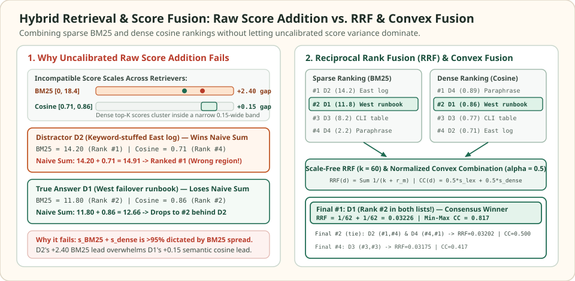

Hybrid retrieval and score fusion: combine lexical and dense rankings
Sparse lexical retrievers (BM25) and dense bi-encoders fail on complementary tails of the query distribution. BM25 locks onto exact product SKUs, error hex codes, CLI flags, and rare proper nouns, but misses paraphrases that share zero surface stems. Dense embeddings capture conceptual paraphrases across vocabulary shifts, but compress an entire passage into a single vector that frequently blurs exact identifiers or regional qualifiers.
Running both retrievers in parallel is cheap, yet merging their candidate lists by adding raw scores ($s_{\text{BM25}}(d) + s_{\text{dense}}(d)$) silently reduces the hybrid pipeline back to a lexical-only ranker. Because unbounded BM25 log-odds scores span $[0, 18.4+]$ while dense cosine similarities among top-$K$ hits cluster inside a narrow $[0.71, 0.89]$ band, the variance of a naive sum is over $95\%$ controlled by BM25. Proper score fusion requires either discarding raw scales via Reciprocal Rank Fusion (RRF) or calibrating score distributions via normalized convex combination.
When a #2 rank in both lists beats #1 in either list alone
4 candidates · BM25 range [2.2, 14.2] · cosine range [0.71, 0.89]
Suppose an on-call engineer queries: How do we override the West cache TTL during a region failover? Four candidate passages $D_1\dots D_4$ are returned across the sparse BM25 index and the dense cosine index. $D_1$ is the true West failover runbook (saying West failover sets a 300s Redis expiry override, ranking #2 in both lists), $D_2$ is a keyword-stuffed East incident log repeating cache TTL override (ranking #1 in BM25), $D_3$ is a generic CLI flag table, and $D_4$ is a high-level architectural paraphrase with no exact CLI terms (ranking #1 in dense search).


Notice what happens across the four scoring columns below. Neither single retriever ranks the true runbook $D_1$ first: BM25 prefers the keyword-heavy East log $D_2$ ($14.20$ vs. $11.80$), while the dense retriever prefers the abstract paraphrase $D_4$ ($0.89$ vs. $0.86$). Adding raw scores ($s_{\text{BM25}} + s_{\text{dense}}$) hands Rank #1 to the wrong-region log $D_2$ ($14.91$ vs. $12.66$). Only when ranks or normalized scores are fused does the consensus candidate $D_1$ emerge at Rank #1.
Comparison of raw scores, individual ranks, naive sum, Reciprocal Rank Fusion (k = 60), and Min-Max Convex Combination (alpha = 0.5) across the 4 candidates.
| Candidate & profile | BM25 score ($r_{\text{lex}}$) | Dense cosine ($r_{\text{dense}}$) | Naive sum ($s_{\text{lex}} + s_{\text{dense}}$) | RRF ($k = 60$) | Min-Max CC ($\alpha = 0.5$) |
|---|---|---|---|---|---|
| D1: True West failover runbook | 11.80 (#2) | 0.86 (#2) | 12.66 (#2) | 0.03226 (#1) | 0.8167 (#1) |
| D2: Keyword-heavy East log | 14.20 (#1) | 0.71 (#4) | 14.91 (#1 — wrong) | 0.03202 (#2 tie) | 0.5000 (#2 tie) |
| D3: Generic CLI flag table | 8.20 (#3) | 0.77 (#3) | 8.97 (#3) | 0.03175 (#4) | 0.4167 (#4) |
| D4: Abstract dense paraphrase | 2.20 (#4) | 0.89 (#1) | 3.09 (#4) | 0.03202 (#2 tie) | 0.5000 (#2 tie) |
Scroll horizontally to compare the columns. Keyboard: focus the table, then use the left and right arrow keys.
Reciprocal Rank Fusion (RRF) and the role of the smoothing constant k
Introduced by Cormack, Clarke, and Buettcher (SIGIR 2009), Reciprocal Rank Fusion (RRF) discards raw scores altogether and maps each document $d$ in ranked list $L_m$ ($m \in \{1, \dots, M\}$) to the reciprocal of its $1$-based rank $r_m(d) \in \{1, 2, \dots, |L_m|\}$ shifted by a smoothing constant $k > 0$:
If a document $d$ does not appear in retriever $m$'s top-$K$ cutoff ($d \notin L_m$), that retriever contributes $0$ to the sum. Why add $k = 60$ instead of using pure reciprocal ranks $\frac{1}{r_m(d)}$ ($k = 0$)? Under pure reciprocal rank ($k = 0$), Rank #1 contributes $1.0$, Rank #2 contributes $0.5$, and Rank #3 contributes $0.333$. A single retriever placing a noisy outlier at Rank #1 ($1.0$) would automatically beat a consensus document ranked #2 by two independent retrievers ($0.5 + 0.5 = 1.0$, or $0.5 + 0.333 = 0.833$).
Adding $k$ bounds the relative step ratio between Rank #1 and Rank #2 to $\frac{k+2}{k+1}$. Whenever $k > 0$, a consensus candidate ranked #2 in both lists ($r_{\text{lex}} = 2, r_{\text{dense}} = 2$) strictly beats a specialist candidate ranked #1 in one list and #4 (or absent) in the other, because:
At $k = 60$, Rank #1 yields $\frac{1}{61} \approx 0.01639$ while Rank #2 yields $\frac{1}{62} \approx 0.01613$—a gentle $1.6\%$ step-down per rank at the top of the list that rewards multi-retriever agreement over single-retriever spikes.
Score calibration and normalized convex combination
While RRF is completely immune to score distortion, throwing away raw scores also discards confidence margins: if BM25 scores $D_1$ at $19.5$ and $D_2$ at $4.1$, RRF treats that $15.4$-point chasm identically to a $11.81$-vs-$11.80$ near-tie. As Bruch et al. (ACM TOIS 2023) proved across benchmark corpora, linear Convex Combination (CC) consistently outperforms RRF by $2\text{--}4\%$ nDCG@10 once each retriever's scores are normalized onto a comparable scale before blending:
The two standard per-query normalization functions computed over candidate pool $C_m$ are Min-Max scaling and Z-score standardization:
In our $4$-document puzzle, the BM25 pool spans $[2.20, 14.20]$ (width $12.00$) and the dense pool spans $[0.71, 0.89]$ (width $0.18$). Under Min-Max scaling, $D_1$ maps to $\tilde{s}_{\text{lex}}(D_1) = \frac{11.80 - 2.20}{12.00} = 0.8000$ and $\tilde{s}_{\text{dense}}(D_1) = \frac{0.86 - 0.71}{0.18} = 0.8333$, yielding $s_{\text{CC}}(D_1) = 0.5(0.8000) + 0.5(0.8333) = 0.8167$—decisively beating $D_2$ ($0.5000$) and $D_4$ ($0.5000$).
Note a subtle theoretical vulnerability of sample Min-Max scaling: because its denominator depends purely on the two extreme values $\max s_m$ and $\min s_m$ in the top-$K$ cutoff, a single low-scoring tail document at rank $K$ stretches the denominator and compresses all top-ranked scores toward $1.0$. Replacing the sample minimum with a theoretical lower bound (or using Z-score / clipped percentile bounds) stabilizes convex fusion when top-$K$ pools contain noisy tail hits.
Choosing between RRF and Convex Combination in production
Use the decision table below to choose between rank-only fusion and score-calibrated convex fusion, followed by a self-contained Python verification of our $4$-candidate puzzle under all three fusion regimes.
| Fusion method | Calibration required | Primary strength | Failure mode to watch |
|---|---|---|---|
| Reciprocal Rank Fusion ($\operatorname{RRF}, k=60$) | None (uses $1$-based ranks $r_m(d)$ only) | Zero hyperparameter tuning; works even when black-box APIs omit raw scores or change scoring metrics | Ignores large confidence gaps between #1 and #2; treats a runaway exact match identically to a 0.001-point tie |
| Min-Max Convex ($\alpha\,\tilde{s}_{\text{dense}} + (1-\alpha)\tilde{s}_{\text{lex}}$) | Maps each list to $[0, 1]$ per query; tune $\alpha \in [0, 1]$ on a validation set | Preserves relative score gaps inside $[0, 1]$ and achieves higher nDCG@10 than RRF when $\alpha$ is tuned | Sensitive to a single outlier at $\max C_m$ or $\min C_m$, which can skew the denominator across small top-$K$ pools |
| Z-Score Convex ($\mu_m = 0, \sigma_m = 1$) | Standardizes mean and standard deviation across top-$K$ candidates per query | Robust to a single minimum tail outlier because $\sigma_m$ averages squared deviations across all $K$ candidates | Unbounded output range $(-\infty, +\infty)$ requires a fixed fallback floor when a document is missing from one list |
import math
# 4 candidate passages from the opening puzzle
candidates = {
"D1": {"bm25": 11.80, "dense": 0.86, "label": "True West failover runbook"},
"D2": {"bm25": 14.20, "dense": 0.71, "label": "Keyword-heavy East log"},
"D3": {"bm25": 8.20, "dense": 0.77, "label": "Generic CLI flag table"},
"D4": {"bm25": 2.20, "dense": 0.89, "label": "Abstract dense paraphrase"},
}
def compute_ranks(scores_dict):
ordered = sorted(scores_dict.items(), key=lambda kv: kv[1], reverse=True)
return {doc_id: idx + 1 for idx, (doc_id, _) in enumerate(ordered)}
bm25_scores = {d: v["bm25"] for d, v in candidates.items()}
dense_scores = {d: v["dense"] for d, v in candidates.items()}
r_lex = compute_ranks(bm25_scores)
r_dense = compute_ranks(dense_scores)
assert r_lex == {"D2": 1, "D1": 2, "D3": 3, "D4": 4}
assert r_dense == {"D4": 1, "D1": 2, "D3": 3, "D2": 4}
# 1. Naive uncalibrated raw sum fails (D2 wins instead of D1)
naive_sum = {d: bm25_scores[d] + dense_scores[d] for d in candidates}
assert max(naive_sum, key=naive_sum.get) == "D2"
assert math.isclose(naive_sum["D2"], 14.91) and math.isclose(naive_sum["D1"], 12.66)
# 2. Reciprocal Rank Fusion (k = 60) promotes D1 (#2 in both) to Final Rank #1
def rrf_fuse(rank_lists, k=60):
docs = set().union(*rank_lists)
return {
d: sum(1.0 / (k + r[d]) for r in rank_lists if d in r)
for d in docs
}
rrf_scores = rrf_fuse([r_lex, r_dense], k=60)
assert max(rrf_scores, key=rrf_scores.get) == "D1"
assert math.isclose(rrf_scores["D1"], 2.0 / 62.0, rel_tol=1e-9)
assert math.isclose(rrf_scores["D2"], 1.0 / 61.0 + 1.0 / 64.0, rel_tol=1e-9)
# 3. Min-Max & Z-Score Convex Combination (alpha = 0.5) also promote D1 to #1
def minmax_norm(scores):
lo, hi = min(scores.values()), max(scores.values())
return {d: (s - lo) / (hi - lo) for d, s in scores.items()}
def zscore_norm(scores):
vals = list(scores.values())
mu = sum(vals) / len(vals)
sigma = math.sqrt(sum((x - mu) ** 2 for x in vals) / len(vals))
return {d: (s - mu) / sigma for d, s in scores.items()}
lex_mm, dense_mm = minmax_norm(bm25_scores), minmax_norm(dense_scores)
cc_minmax = {d: 0.5 * dense_mm[d] + 0.5 * lex_mm[d] for d in candidates}
assert max(cc_minmax, key=cc_minmax.get) == "D1"
assert math.isclose(cc_minmax["D1"], 0.8166666667, rel_tol=1e-6)
assert math.isclose(cc_minmax["D2"], 0.5000, rel_tol=1e-6)
lex_z, dense_z = zscore_norm(bm25_scores), zscore_norm(dense_scores)
cc_zscore = {d: 0.5 * dense_z[d] + 0.5 * lex_z[d] for d in candidates}
assert max(cc_zscore, key=cc_zscore.get) == "D1"
print("RRF winner:", max(rrf_scores, key=rrf_scores.get), f"({rrf_scores['D1']:.5f})")
print("Min-Max CC winner:", max(cc_minmax, key=cc_minmax.get), f"({cc_minmax['D1']:.4f})")Check the operating assumptions
Why does setting the RRF constant k = 0 allow a single noisy retriever to override consensus between two retrievers?
At k = 0, Rank #1 receives score 1/1 = 1.0 while Rank #2 receives 1/2 = 0.5 and Rank #3 receives 1/3 = 0.333. A document ranked #1 in one retriever and absent (or ranked #5, score 0.20) in the second retriever gets 1.0 + 0.20 = 1.20, easily beating a consensus document ranked #2 in one list and #3 in the other (0.5 + 0.333 = 0.833). Setting k = 60 compresses the #1-to-#2 ratio to 62/61 = 1.016, ensuring two strong top-5 ranks beat a single #1 outlier.
When does normalized Convex Combination (CC) outperform Reciprocal Rank Fusion (RRF)?
Whenever one retriever has a high-confidence exact hit whose raw score sits far above Rank #2 (for example, an exact SKU match with BM25 = 22.0 vs. 5.1 at Rank #2), RRF discards that 16.9-point margin and gives Rank #1 only 1/61 vs. 1/62. Normalized Convex Combination preserves the relative gap inside [0, 1], allowing an unmistakable exact hit to retain its margin.
How should you handle a candidate document d that appears in the dense top-K list but is missing from the BM25 top-K list under Min-Max Convex Combination?
After scaling each retrieved list into [0, 1] using Min-Max normalization, assign a normalized score of 0.0 (equivalent to the minimum cutoff score at rank K) for any retriever whose top-K pool omitted d. Avoid assigning raw 0.0 before normalization, because 0.0 may lie far below min(C_dense) for cosine similarity or distort Z-score means.
Sources
- Cormack, Clarke & Buettcher: Reciprocal Rank Fusion Outperforms Condorcet and Individual Rank Learning Methods, SIGIR 2009 (original formulation of RRF and the $k = 60$ constant).
- Bruch, Gai & Ingber: An Analysis of Fusion Functions for Hybrid Retrieval, ACM Transactions on Information Systems (TOIS) 2023 (theoretical and empirical comparison of RRF vs. Min-Max and Z-score convex combinations).
- Thakur et al.: BEIR: A Heterogeneous Benchmark for Zero-Shot Evaluation of Information Retrieval Models, NeurIPS Datasets and Benchmarks 2021 (lexical BM25 + dense hybrid robustness across 18 datasets).